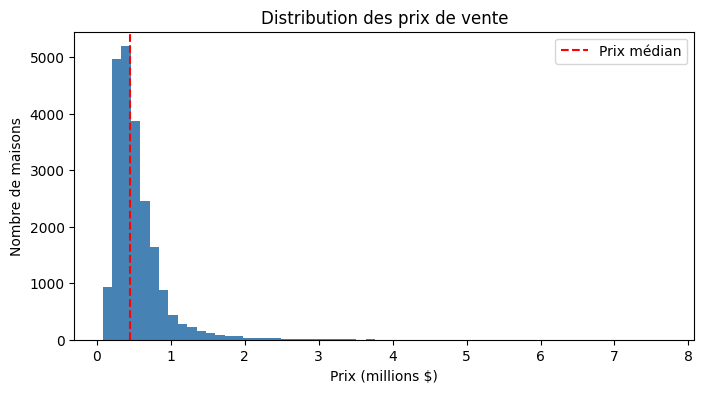
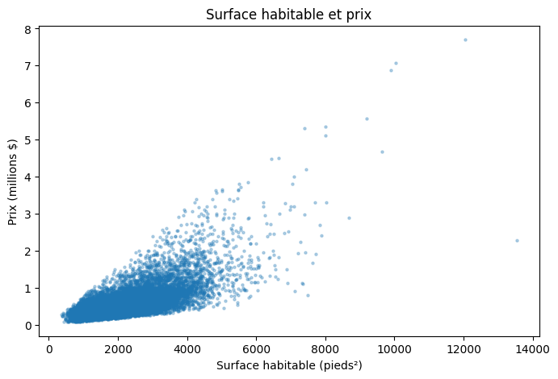
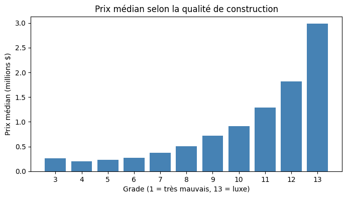
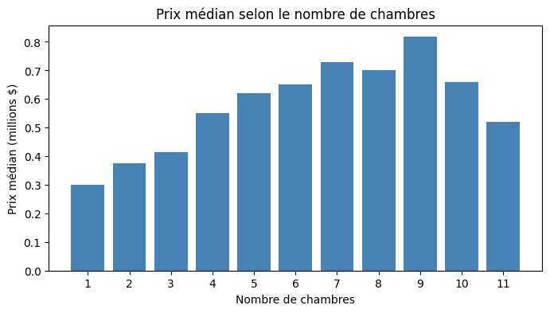
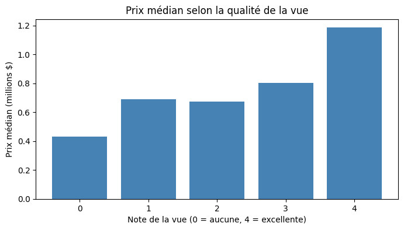
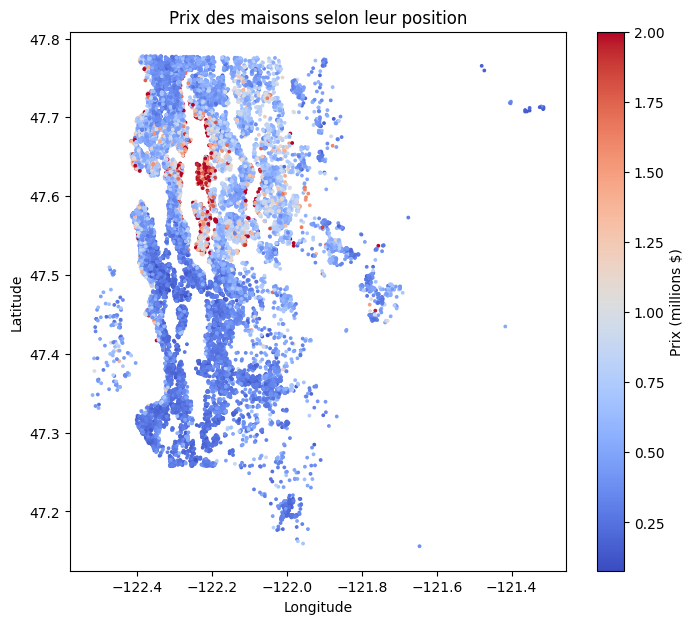
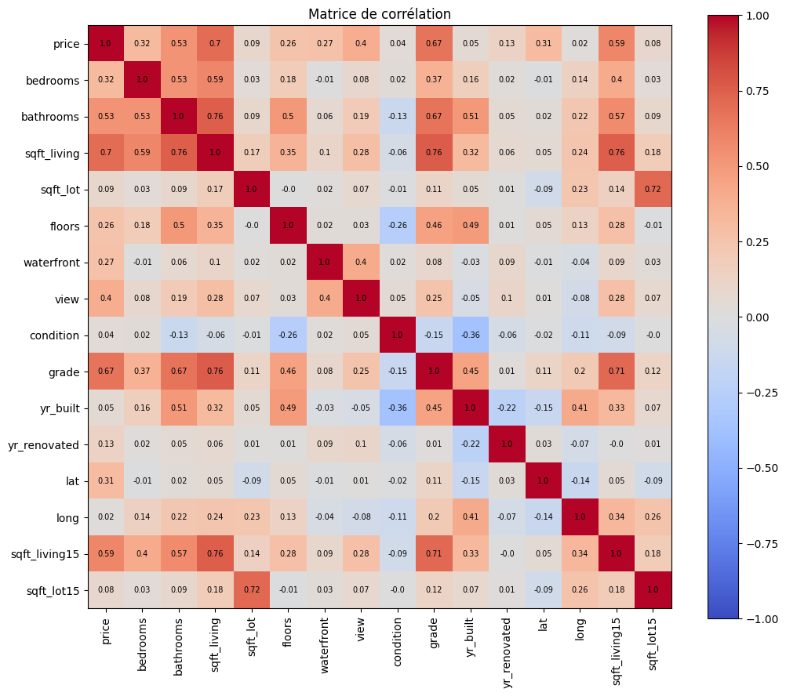
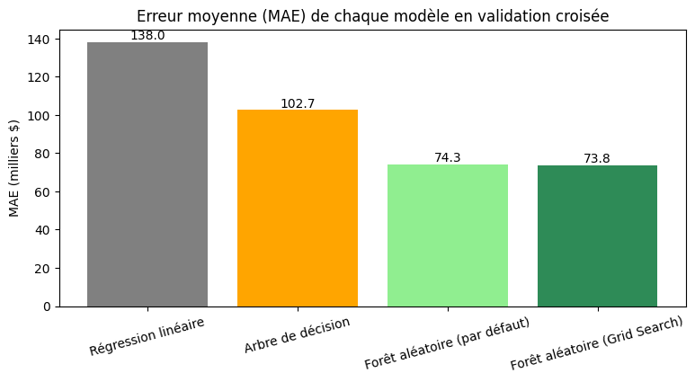

Ventes de maisons du comté de King (région de Seattle) entre mai 2014 et mai 2015.
Ce tableau de bord remplace le dashboard Power BI demandé dans le sujet (Power BI n'était pas disponible) :
les graphiques ont été faits en Python dans le notebook apartment_hunter.ipynb.

La plupart des maisons coûtent moins de 1 million $. Quelques maisons très chères étirent la distribution vers la droite (jusqu'à 7,7 M$).

Le prix augmente globalement avec la surface (corrélation de 0,70). Les grandes maisons ont des prix plus dispersés.

Le prix médian augmente globalement avec la qualité de construction : 0,38 M$ pour le grade 7 (moyen), 2,98 M$ pour le grade 13. En bas de l'échelle, le grade 3 dépasse le grade 4, mais ces groupes ne comptent que 1 et 27 maisons.

La tendance monte globalement jusqu'à environ 7 chambres. Au-delà, il y a très peu de maisons (13, 6, 3 et 1) : on ne peut pas en tirer une tendance fiable.

Prix médian de 0,43 M$ sans vue contre 1,18 M$ avec une vue excellente. Avec vue sur l'eau : 1,4 M$ contre 450 000 $.

Des zones sont nettement plus chères (en rouge) que d'autres, alors que la corrélation de la longitude avec le prix est presque nulle (0,02) : la localisation compte, mais pas « en ligne droite ».

Les variables les plus liées au prix sont la surface (0,70), le grade (0,67) et la surface des voisins (0,59). La surface est aussi très liée au nombre de salles de bain et au grade (0,76).

Erreur moyenne en validation croisée sur le train : la forêt aléatoire optimisée par Grid Search est la meilleure (73 764 $), juste devant la forêt par défaut (74 266 $). Évaluation finale sur le jeu de test, faite une seule fois : R² de 0,877 et erreur moyenne de 71 718 $.